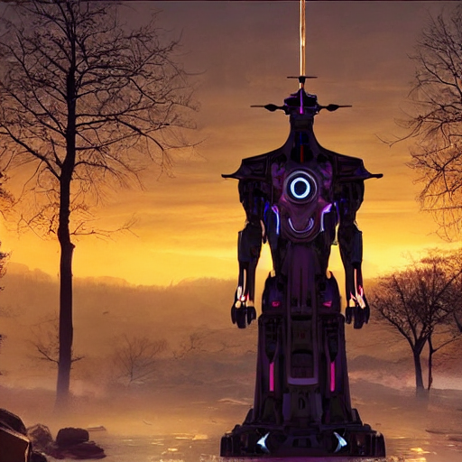

Home Blog
Stable Diffusion AI Generated Images
AI images created with Stable Diffusion using the diffusers, transformers, and scipy Python Libraries.
The traditional first AI generated image "astronaut rides horse on mars"
"pretty woman"
"a portrait of a cute girl with a luminous dress, eyes shut, mouth closed, long hair,
wind, sky, clouds, the moon, moonlight, stars, universe, fireflies, butterflies, lights,
lens flares effects, swirly bokeh, brush effect, In style of Yoji Shinkawa, Jackson Pollock,
wojtek fus, by Makoto Shinkai, concept art, celestial, amazing, astonishing, wonderful,
beautiful, highly detailed, centered"
"portrait photo of a asia old warrior chief, tribal panther make up, blue on red,
side profile, looking away, serious eyes, 50mm portrait photography, hard rim lighting
photography beta ar 2:3 beta upbeta upbeta"
"buddhist temple, amazing, 8k, in the clouds"

"temple in ruines, forest, stairs, columns, cinematic, detailed, atmospheric, epic,
concept art, Matte painting, background, mist, photo-realistic, concept art,
volumetric light, cinematic epic + rule of thirds octane render, 8k, corona render,
movie concept art, octane render, cinematic, trending on artstation, movie concept art,
cinematic composition , ultra-detailed, realistic , hyper-realistic , volumetric lighting
, 8k ar 2:3 test uplight"
"Amazing, complex, intricate and highly detailed treehouse in a snow covered bonsai tree on
top of a table, steampunk, vibrant colors, vibrant, beautiful, contrast, neon highlights,
Highly detailed, ray tracing, digital painting, artstation, concept art, smooth, sharp focus,
illustration, art by Beeple, Mike Winklemann, 8k"

"realistic 4k vision of what AI imagines its appearance as a sentinent being"